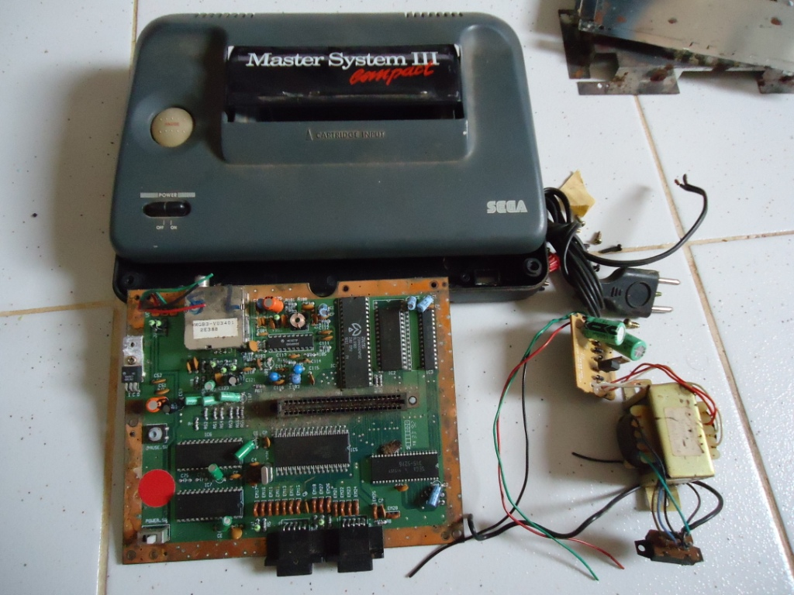

Master System - Restaurando um Master 3
 :::. Por Gigacom - Apesar de não ser o Master System mais lindo do mundo, o Master 3 é querido e amado por muitos, e cá entre nós, foi o Master System que mais vendeu por aqui.
:::. Por Gigacom - Apesar de não ser o Master System mais lindo do mundo, o Master 3 é querido e amado por muitos, e cá entre nós, foi o Master System que mais vendeu por aqui.
__________________________________________________________________________
Esse Master chegou até mim junto com um outro, e vieram praticamente a titulo de doação. Resolvi escolher este para fazer esse artigo, pois o outro apesar de estar até um tiquin mais sujo, não apresentava a mesma dificulcade que este apresesenta, pois apesar de por fora os dois serem iguais, por dentro este se mostra um dos primeiros modelos de Master 3 (com placa mãe maior, fonte, fios, chapas de metal...) enquanto que o outro se resume a apenas uma plaquinha simples e uma fonte capenga parafusada no plástico do console.
Primeira coisa que fiz, foi dar uma olhada ali dentro, no slot de entrada dos cartuchos. Havia poeira em abundância. Nem me arrisquei a ligar o console, aliás, essa é uma regrinha de ouro para quem consegue um console em mal estado. NUNCA LIGUE ELE ANTES DE LIMPÁ-LO! As vezes tem tanta sujeira que o simples fato de ligar o console na tomada já é o suficiente para provocar danos irrevesiveis no console.
Tá achando que por fora nem tá tão ruim assim? De fato, não estava. Bastava um paninho e uma escovinha para deixar esse Master novinho de novo, mas por dentro havia um sinal claro de que a coisa estava ruim. Então peguei a chave estrela, abri o console e...
É... a coisa não tava muito boa. Muita poeira, sujeira e até uma casinha vazia de algum bicho que viveu ali. As chapas de metal estavam muito oxidadas e sujas, um perigo para os meus dedos (apesar de ser vacinado contra tétano, não quero me arriscar a pegar algum outro treco que não conheço). Há um meio de se recuperar essas chapas usando ácidos ou anticorrosivos, mas são caros e como pretendo instalar alguns mods nesse video game, essas chapas iriam mais cedo ou mais tarde serem descartadas. Então, já as deixei separadas para o lixo (infelizmente...).
Esse Master System possui uma fonte com duas voltagens, semelhante a do Master System 1/2. Três fios saem dela e são soldados na placa mãe do console. Também há um sistema que usa um fusivel para proteger a fonte. Como a minha intenção era lavar a placa e a parte plástica do console, então teria que remover a fonte. Particularmente, decidi cortar os fios que ligam a fonte a placa e ao fusivel, pois estava com pouquissimo tempo disponivel para realizar essa tarefa. Para vocês terem uma idéia, sou casado e pai, então os únicos momentos que tenho para fazer esse tipo de coisa, é quando minha esposa e minha filha saem para passear com o cachorro ou vão dar uma voltinha aqui por perto. Então, como não havia tempo para manusear um ferro de solda e fazer um trabalho mais bonito, apelei para o alicate e mandei ver nos cortes, a fim de separar tudo e começar a trabalheira de limpar esse Master:

A fonte não pode ver água. Não que se ela vier por acaso tomar um banho vá estragar, mas sim porque é um saco secar esse treco, e como a fonte é um item que DEVE ficar seco enquanto opera, não a lavei (e também nem era preciso, sujo mesmo estava era a placa). A placa mãe do Master pode ser lavada sem problema, desde que fique bem seca antes de ser ligada novamente, não haverá dano algum aos componentes que ali estão. Eu costumo após lavar uma placa dessas, colocá-las para secar junto com as toalhas de banho, só que ao invés de deixar a placa fritando no sol de meio dia, deixo-o meio que secando na sombra com pouca incidência solar. Acreditem, coisa de 5 minutos e fica tudo bem sequinho. A ultima foto do quadro abaixo mostra a placa limpinha secando na janela aqui de casa:
Para limpar uma placa, recomendo fortemente que se use um pincel para limpar a parte de cima onde estão os componentes. O pincel tem cerdas longas, finas e macias, elas removem a sujeira sem danificar ou entortar qualquer coisa ali soldada. Uma escovinha de dentes pode ser usada para limpar o interior do slot de cartuchos, pois aqueles dentinhos de metal costumam enganchar nas cerdas do pincel. A parte de baixo da placa desse master, limpei com uma escova pequena, pois tinha muito mofo grudado na placa, coisa que o pincel não consegue remover.
Depois de tudo limpo e seco, falta só montar. A fonte é a primeira coisa a se montar nesse master tendo em consideração que os fios e a própria fonte podem ser danificadas facilmente. Com ela montada, é simples montar o resto do console no plástico:
Tudo remontado por dentro, dei uma boa olhada por fora para adimirar o trabalho que fiz em tempo recorde (10 minutinhos contados!).
É, ficou bem limpinho. A placa mãe que estava uma nhaca, agora ficou novinha, e a cara do video game que estava meio judiada, agora estaa apta a posar ao lado dos outros consoles lá na estante da minha coleção. Mas para mim, pouca serventia tem um console bonito que não funciona. Ter um video game e não poder jogá-lo não é uma coisa muito legal... então, chegou a hora do teste. O meu medo era de que o console já estivesse danificado antes de eu pegá-lo, mas felizmente...
Tudo funcionando perfeitamente! O joguinho do menino orelhudo no mundo miraculoso estava perfeito, e Thunder Blade pegou de primeira no console. As entradas dos controles estão perfeitas, respondendo a todos os comandos prontamente. Então, aqui está mais um Master 3 que volta a vida em pleno século 21. E quem disse que os antigos consoles de 8 bits estavam fadados a morte?